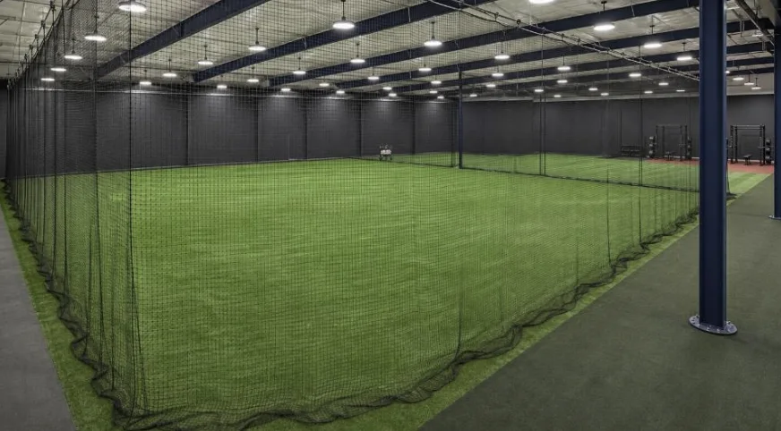
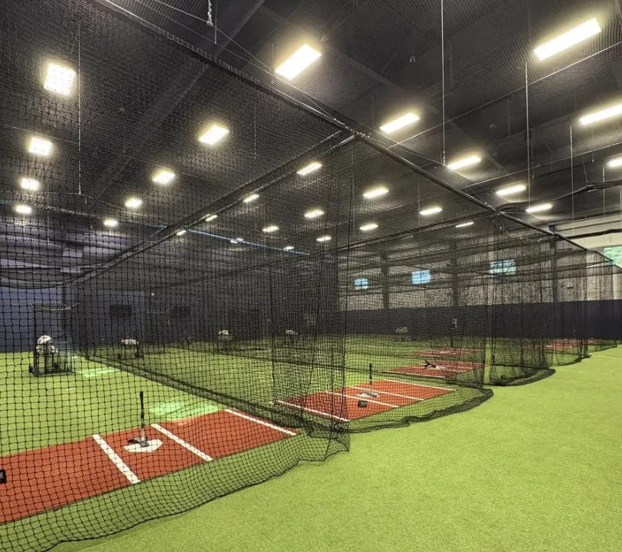
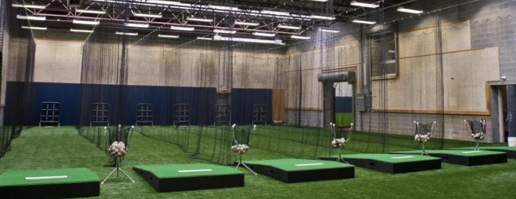

Athletes
Developing players who compete hard, lead well and play for something bigger than the scoreboard.
Mission Driven Sports · Kansas
A higher purpose for athletes and the families who stand behind them.
Our Mission
Mission Driven Sports exists to help young athletes grow in character, faith and leadership through the game they love. Wins matter. Who our players become matters more.
We walk alongside athletes and their families, celebrate their stories, and create places where faith is welcome and never forced.
Developing players who compete hard, lead well and play for something bigger than the scoreboard.
Welcoming the parents, siblings and grandparents who make every season special, from road trips to tournaments to cheering in the stands.
Creating places where faith is welcome and never forced, on the field and off it.
The Facility · Opening in December
Mission Driven Sports gives Spring Hill and the surrounding area a year-round indoor home for baseball and athletic development. The space is laid out so fielders, hitters, and pitchers can all train at the same time.

01
A wide-open, netted turf field for infield and outfield work, team practices, and speed and agility training. Plenty of room to take ground balls, work on footwork, and run full team drills indoors.

02
Fully netted batting tunnels with turf and hitting mats, built for lessons, tee and front-toss work, and live or machine batting practice.

03
Dedicated pitching lanes with mounds so pitchers can work on mechanics, command, and bullpens year-round, no matter the weather.
What we do
Stories
Features on the players and families who live out the mission.
Training
Strength, speed and athletic development that helps athletes perform at their best and stay healthy.
Baseball
Our baseball home since 2007: 10U–18U teams and training, now training at the new Mission Driven Sports facility.
Visit naturalbaseball.com →Get involved
Churches, coaches, sponsors and volunteers who want to invest in young athletes. Reach out below.
Get in touch →Official gear
Mission Driven Sports faith apparel and Natural Baseball gear live together in one place.
Ask About GearI
Play
For
Him
Faith Collection · The Shop
Proudly serving
Spring Hill / Olathe / Gardner / Paola / Louisburg / Edgerton / Johnson & Miami County
Opening in December
Home of Natural Baseball Academy. A place where athletes train hard, grow together and play with purpose.
Get DirectionsGet in touch
Questions about the facility, programs, rentals, gear, or partnering with us? Send us an email.
info@mdskansas.com